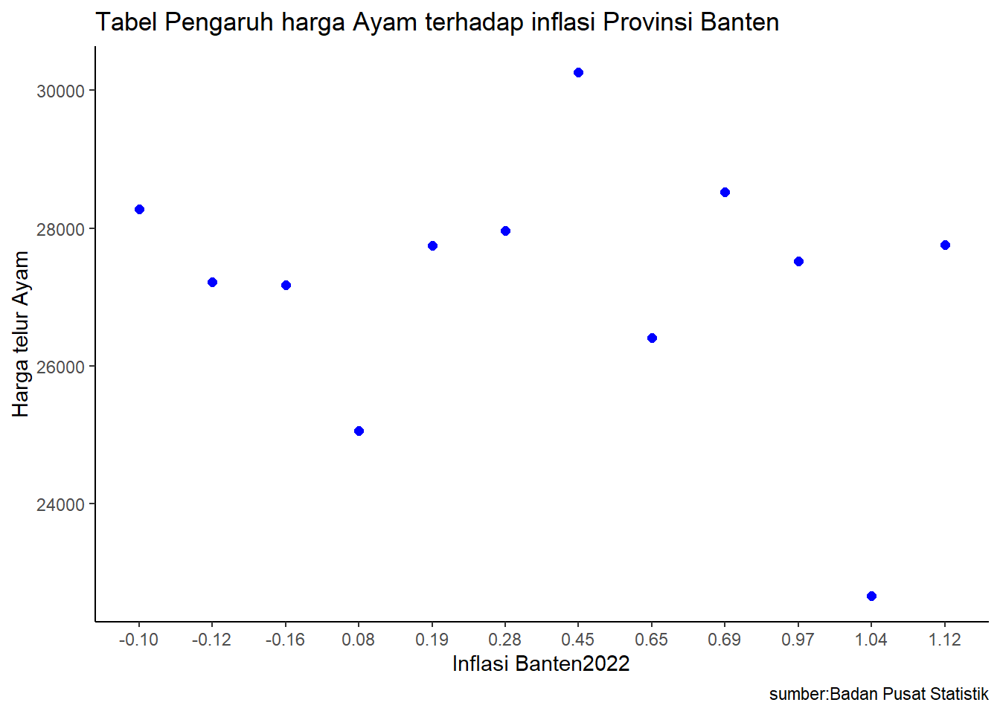

library(readxl)
library(ggplot2)
library(dplyr)Pengaruh Inflasi Provinsi Banten Pada Tahun 2022 Terhadap Harga Telur Ayam
Metode Penelitian Politeknik APP Jakarta

1 Pendahuluan
1.1 Latar belakang
Latar belakang penelitian ini muncul dari pentingnya memahami faktor-faktor yang mempengaruhi inflasi, yang merupakan indikator penting bagi kesehatan ekonomi suatu wilayah. Harga telur dipilih sebagai fokus karena merupakan salah satu komoditas makanan penting yang secara luas dikonsumsi oleh masyarakat. Fluktuasi harga telur dapat memiliki dampak signifikan terhadap inflasi karena dapat mempengaruhi indeks harga konsumen (IHK) secara keseluruhan.
1.2 Ruang lingkup
Penelitian ini akan mengeksplorasi bagaimana tingkat inflasi di Provinsi Banten pada tahun 2022 memengaruhi harga telur ayam. Hal ini melibatkan analisis dampak langsung dari inflasi terhadap harga telur ayam.
1.3 Rumusan masalah
Apakah adanya Pengaruh Inflasi Provinsi Banten Pada Tahun 2022 Terhadap Harga Telur Ayam
Apakah inflasi pada provinsi Banten berpengaruh besar terhadap harga Telur Ayam?
1.4 Tujuan dan manfaat penelitian
Tujuan dari penelitian “Pengaruh Inflasi Provinsi Banten Pada Tahun 2022 Terhadap Harga Telur Ayam” adalah untuk mengeksplorasi bagaimana tingkat inflasi di Provinsi Banten pada tahun 2022 memengaruhi harga telur ayam. Penelitian ini juga bertujuan untuk memberikan wawasan tentang dinamika ekonomi dan harga konsumen di wilayah tersebut pada periode tersebut. Manfaat dari penelitian ini adalah untuk memberikan informasi yang berguna bagi pemerintah, pelaku bisnis, dan masyarakat umum dalam mengambil keputusan terkait harga telur ayam dan inflasi di Provinsi Banten pada tahun 2022.
1.5 Package
2 Studi pustaka
Terjadinya kelangkaan pasokan dan tingginya permintaan masyarakat terhadap pangan menimbulkan gejolak harga pangan. Sehingga peningkatan harga pangan berdampak terhadap inflasi (Irawati, Wibowo, & Ayu, 2019).
3 Metode Penelitian
3.1 Data
| Bulan | Inflasi 2022 | Harga Telur Ayam |
|---|---|---|
| Januari | 0.69 | 28523 |
| Februari | 0.08 | 25056 |
| Maret | 1.04 | 22669 |
| April | 0.97 | 27525 |
| Mei | 0.19 | 27744 |
| Juni | 0.65 | 26406 |
| Juli | 0.28 | 27962 |
| Agustus | -0.16 | 27181 |
| September | 1.12 | 27756 |
| Oktober | -0.12 | 27217 |
| November | -0.10 | 28275 |
| Desember | 0.45 | 30265 |
library("readxl")
dat<-read_excel("C:/Users/sulta/OneDrive/Documents/Metodologi Penelitian/UAS new/Data AYAM 1.xlsx")
head(dat)# A tibble: 6 × 2
X Y
<chr> <dbl>
1 0.69 28523
2 0.08 25056
3 1.04 22669
4 0.97 27525
5 0.19 27744
6 0.65 26406library("ggplot2")
library("dplyr")
ggplot(data=dat,aes(x=X,y=Y))+
geom_point(color="blue",size=2)+
labs(title="Tabel Pengaruh harga Ayam terhadap inflasi Provinsi Banten",
x="Inflasi Banten2022",
y="Harga telur Ayam",
caption="sumber:Badan Pusat Statistik")+
theme_classic()
3.2 Metode analisis
Metode yang dipilih adalah regresi univariat atau Ordinary Least Square (OLS) dengan 1 variabel independen. Penelitian ini merbaksud mencari hubungan antara Inflasi Provinsi Banten dengan Harga Telur Ayam. Spesifikasi yang dilakukan adalah:
library("readxl")
dat<-read_excel("C:/Users/sulta/OneDrive/Documents/Metodologi Penelitian/UAS new/Data AYAM 1.xlsx")
head(dat)# A tibble: 6 × 2
X Y
<chr> <dbl>
1 0.69 28523
2 0.08 25056
3 1.04 22669
4 0.97 27525
5 0.19 27744
6 0.65 264063.3 Analisis Masalah
Hasil Regresinya sebagai berikut.
reg1<-lm(X~Y,data=dat)
summary(reg1)
Call:
lm(formula = X ~ Y, data = dat)
Residuals:
Min 1Q Median 3Q Max
-0.58592 -0.45922 0.03905 0.34529 0.72382
Coefficients:
Estimate Std. Error t value Pr(>|t|)
(Intercept) 1.832e+00 2.078e+00 0.881 0.399
Y -5.173e-05 7.620e-05 -0.679 0.513
Residual standard error: 0.478 on 10 degrees of freedom
Multiple R-squared: 0.04406, Adjusted R-squared: -0.05153
F-statistic: 0.4609 on 1 and 10 DF, p-value: 0.51264 Kesimpulan
Hasil penelitian menunjukkan bahwa inflasi di Provinsi Banten pada tahun 2022 memiliki pengaruh terhadap harga telur ayam, dengan hasil penelitian menunjukkan penurunan sebesar 5,173 persen. Penelitian ini juga menyoroti fluktuasi harga komoditas pangan, termasuk telur ayam, dan dampaknya terhadap inflasi. Oleh karena itu, dapat disimpulkan bahwa inflasi di Provinsi Banten memiliki pengaruh negatif terhadap harga telur ayam, dengan penurunan sebesar 5,173 persen.
5 Saran
Untuk meningkatkan akurasi dari penelitian ini, lebih baiknya untuk menambahkan beberapa variabel yang mendukung variabel yang terkait.
6 Referensi
Apriyadi, Ryan, and Dinar Melani Hutajulu. n.d. “PENGARUH HARGA KOMODITAS PANGAN HEWANI ASAL TERNAK TERHADAP INFLASI DI PROVINSI D.I. YOGYAKARTA.” ECOBISMA.
BADAN PUSAT STATISTIK. n.d. “Harga Telur Ayam Ras (1 Kg) (Rupiah), 2020-2022.”
BADAN PUSAT STATISTIK PROVINSI BANTEN. n.d. “Inflasi Bulanan Di Provinsi Banten (Persen), 2021-2023.”